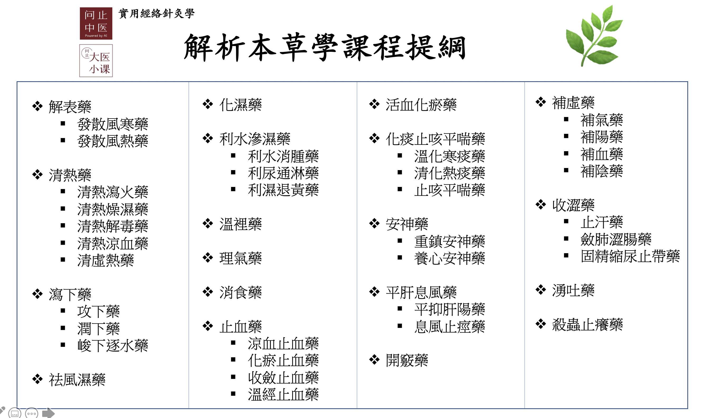

|
|
同 | 異 |
|
| 去血瘀 | 頭痛、風濕痹痛、肢體麻木 |
|
|
血瘀氣滯諸痛 | |
|
|
胸脅腹痛、熱病神昏、癲癇、肝郁化火， 氣火上逆，破血妄行之吐血、衄血及婦女倒經 |
|
|
|
風寒濕痹 | |
|
|
血瘀諸痛證、瘡瘍癰腫、瘰癧 | |
|
|
止痛、消腫、生肌 | |
|
|
血瘀經閉、痛經、月經不調、產後瘀滯腹痛、心腹疼痛、 癥瘕積聚、瘡瘍癰腫、煩躁不安、心悸、失眠 |
|
|
|
血瘀痛經、經閉、產後瘀滯腹痛、癥瘕積聚、跌打損傷、 心腹損傷疼痛、血熱瘀滯，斑疹紫暗 |
|
|
|
肺癰、腸癰、腸燥便秘、止咳平喘 | |
|
|
婦人經產諸證、水腫、小便不利、瘡癰腫毒、皮膚搔癢 | |
|
|
痛經、經閉、產後腹痛、胞衣不下、腰膝酸軟無力、 上部火熱證、淋證、水腫、小便不利、滋潤柔軟筋骨 |
|
|
|
破血、痛經、經閉、產後腹痛、胞衣不下、腰膝酸軟無力、 上部火熱證、淋證、水腫、小便不利、壯筋骨 |
|
|
|
痛經，經閉、產後瘀滯腹痛，惡露不盡、跌打損傷、 胸脅刺痛及癰腫、產後水腫、小便不利 |
|
|
|
月經不調、痛經、經閉、痹痛、肢體麻木、半身不遂 | |
|
|
血瘀痛經，經閉、產後乳汁不下、乳癰、熱淋、血淋、石淋 | |
|
|
跌打損傷、筋傷骨折、瘀腫疼痛、 腎虛腰痛、足膝痿弱、耳鳴耳聾、牙痛、久瀉 |
|
|
|
跌打損傷、瘀滯心腹刺痛、外傷出血、瘡瘍不斂 | |
|
|
經閉痛經、產後瘀阻、胸腹刺痛、外傷腫痛 | |
|
|
癥瘕積聚、食積氣滯、脘腹脹痛 | |
|
|
血瘀氣滯經閉腹痛、癥瘕積聚、食積氣滯、脘腹脹痛 | |
|
|
癥瘕積聚、血瘀經閉、跌打損傷 | |
|
|
癥瘕痞塊、血瘀經閉、跌打損傷、血瘀腫痛 | |
| ||
[top] ========================= 川芎 =========================
| 川芎 | |
| 性味 | 辛，溫 |
| 歸經 | 肝膽心包 |
| 主治 | 活血行氣，祛風止痛 |
| 運用 | 1、用於血瘀氣滯證2、用於頭痛3、用於風濕痹痛、肢體麻木 |
| 藥性 |      |
● 五鬱之法: 香附開氣鬱，蒼朮除濕鬱，川芎行血鬱，梔子清火鬱，神麴消食鬱 ● 月經腹痛可用茜草，丹皮、白芍、川芎等入肝經的活血藥治之 ● 神經病變(neuropathy)用藥: 芍藥、甘草、炮附子、牛膝、丹皮、川芎 ● 頭痛首先考慮川芎，再來是鉤籐。而頭部風痛(會改變部位)則用白附子、殭蠶 ● 當歸，川芎為血分之主藥，川芎不能比當歸的劑量還要高，否則後遺症會大出血。(川芎不可以單服或久服川芎)(欲止血不可用川芎，因為川芎會行血)(佛手散有此二藥) ● 當歸作用在五臟六腑的行血，而川芎作用在四肢及表面的行血 ● 頭痛三要藥: 川芎、僵蠶、白附子 ● 活血調經，祛風止痛，為婦科活血調經之要藥：川芎 ● 「血中之氣藥」：川芎「頭痛不離川芎」（風寒、風熱、風濕、血瘀、血虛） 傘形科植物: 防風+羌活+白芷+稿本+胡荽+柴胡+獨活+小茴香+阿魏+川芎+前胡+羊紅膻+當歸+北沙參+明黨參+蛇床子
【相關藥對】: ● 當歸+川芎 : 治療：1.月經不調，經行腹痛，婦人難產，產後瘀血腹痛等症； ● 天麻+川芎 : 治療肝陽上亢之頭痛眩暈。 ● 羌活+川芎+桂枝 : 治療後頭痛。 ● 柴胡+黃芩+川芎+蔓荊子 : 治療偏頭痛、兩側頭痛。 ● 大黃+川芎 : 治療腦漏(上顎洞炎)及眼耳痛。 ● 葛根+川芎+白芷 : 治療前頭痛。 ● 葛根+川芎 : 治療各種頭痛。 ● 川芎+白芍+茯苓+澤瀉 : 治療腰腹疼痛，眩暈，小便不利、足跗浮腫，舌淡紅、苔白膩，脈濡細緩。 ● 牡丹皮+川芎+赤芍+桂枝+炮薑 : 治療血瘀證。經痛，閉經。 ● 丹參+川芎+葛根 : 治療胸口刺痛。 ● 川芎+白芷 : 治療頭痛。 ● 大黃+川芎+薏苡仁 : 治療痤瘡，青春痘。 ● 川芎+葛根+丹參+三七 : 治療心肌梗塞。 ● 川芎+丹參 : 治療狹心症，冠心病。 ● 瓜蔞+薤白+川芎 : 治療狹心症，冠心病。胸口悶痛兼刺痛。 ● 川芎+辛夷 : 治療：1.風寒頭痛、鼻塞。 ● 川芎+白芷+菊花 : 1.面神經麻痹（面癱）、面肌痙攣、三叉神經痛（面痛）證屬風邪入絡者；2.頭痛、頭暈、目痛流淚等症，證屬血虛肝旺受風而致者；3.糖尿病視網膜病變所引起的視物模，視力下降者。 ● 鉤藤+川芎 : 治頭痛(抽痛、緊痛)。 [top] ========================= 延胡索 =========================
| 醋延胡索-延胡索 | |
| 性味 | 辛、苦，溫 |
| 歸經 | 心肝脾 |
| 主治 | 活血，行氣，止痛 |
| 運用 | 用於血瘀氣滯諸痛 |
| 藥性 |  |
● 治療肝區痛(右脇痛)的要藥: 金鈴子、延胡索 ● 延胡索也是很好的止痛藥，與鴉片同樣是罌粟科 ● 「能行血中氣滯，氣中血滯，故專治一身上下諸痛之要藥」：延胡索 罌粟科植物: 延胡索+夏天無+罌粟殼
【相關藥對】: ● 川楝子+醋延胡索 : 治療肝鬱化火證。胸腹脇肋諸痛，時發時止，口苦，或痛經，或疝氣痛，舌紅苔黃，脈弦數。 ● 醋香附+鬱金+醋延胡索+丹參 : 治療嚴重經痛必加的要藥。 ● 醋香附+醋延胡索+益母草 : 治療婦人經痛兼有水腫。 ● 醋香附+鬱金+醋延胡索+川楝子 : 治療脇肋疼痛脹痛。 ● 木香+醋延胡索 : 治療心下痛，胃痛；心下滿，腹脹，胃脹氣。 ● 木香+白芍+黃芩+醋延胡索 : 治療下利腹痛。 ● 木香+醋香附+醋延胡索 : 治療氣滯諸痛證。胃痛，脅肋痛，少腹痛。 ● 延胡索+冰片 : 1.冠心病心絞痛諸症；2.脘腹疼痛，證屬氣滯血瘀者。 ● 醋香附+鬱金+醋延胡索+丹參+酒白芍 : 腹痛、經痛、脅肋痛等。 [top] ========================= 鬱金 =========================
| 鬱金 | |
| 性味 | 辛、苦，寒 |
| 歸經 | 肝心膽 |
| 主治 | 活血止痛，行氣解郁，涼血清心，利膽退黃 |
| 運用 | 1、用於血瘀氣滯之胸脅腹痛2、用於熱病神昏，癲癇等證3、用於肝膽濕熱證4、用於肝郁化火，氣火上逆，破血妄行之吐血、衄血及婦女倒經等 |
| 藥性 |   |
● 蒼朮加澤瀉可以解酒。另一藥對是柴胡，鬱金(用於解酒，清肝臟之毒) ● 鬱金用來疏散鬱氣，是行肝氣的要藥 (憂鬱症用鬱金!) ● 逆經要藥:鬱金 ● 遠志令人鎮靜，柴胡鬱金舒解心情 ● 柏子仁、酸棗仁、百合，都是很好的安神藥。鬱金、香附都是可以疏導情緒壓力的藥物
| - | 溫熱藥 | 平藥 | 寒涼藥 |
| 補藥 | 白朮☀ | ||
| 平藥 | 玉米須 | 滑石☀ ,大青葉,秦艽,大薊,小薊,白茅根 | |
| 瀉藥 | 赤小豆☀ | 柴胡☀ ,淡竹葉☂ ,梔子☂ ,黃芩☀ ,黃柏☀ ,龍膽草☀ ,苦參☀ ,白鮮皮☀ ,蒲公英,大黃☀ ,茵陳蒿☀ ,金錢草☀ ,鬱金 |
| - | 升性藥 | 平藥 | 降性藥 |
| 散性藥 | 柴胡☀ | 金錢草☀ ,鬱金 | 淡竹葉☂ ,白鮮皮☀ ,蒲公英,滑石☀ ,茵陳蒿☀ ,赤小豆☀ |
| 平藥 | 苦參☀ | 大青葉,秦艽,玉米須,大薊,小薊,白茅根 | |
| 收性藥 | 白朮☀ | 梔子☂ ,黃芩☀ ,黃柏☀ ,龍膽草☀ ,大黃☀ |
【相關藥對】: ● 鬱金+白礬 : 治療痰迷心竅之癲癇。 ● 石菖蒲+鬱金 : 治療濕溫濁邪蒙蔽心竅之神昏。 ● 醋香附+鬱金 : 治療胸脅苦滿，脇肋脹痛，月經不調痛經，抑鬱症，脈弦。 ● 醋香附+鬱金+醋延胡索+丹參 : 治療嚴重經痛必加的要藥。 ● 金錢草+海金沙+鬱金+炒雞內金 : 治療膽結石最重要的四個要藥。 ● 醋香附+鬱金+醋延胡索+川楝子 : 治療脇肋疼痛脹痛。 ● 醋三棱+醋莪朮+鬱金+牡丹皮 : 治療慢性肝炎。症見脅肋疼痛刺痛，腹脹。 ● 茵陳蒿+鬱金+丹參 : 治療肝病，黃疸。 ● 鬱金+牡丹皮+丹參 : 治療血瘀證。胸痛，脇肋痛。 ● 醋香附+鬱金+王不留行+青皮 : 治療肝鬱氣滯痛證。脇肋疼痛，乳房疼痛，脈弦。 ● 醋鱉甲+鬱金+黨參+桂枝 : 治療慢性肝炎。 ● 蒲公英+王不留行+鬱金+夏枯草 : 治療乳房囊性增生，乳房疼痛。 ● 牡蠣+丹參+鬱金 : 治療腹中癥瘕積聚證，腹中有硬塊或痞塊。 ● 遠志+石菖蒲+鬱金 : 治療失語症。 ● 枳殼+鬱金 : 1.肝鬱氣滯，氣血不和，以致脅肋脹痛、刺痛，心下逆滿，食後不消等症；2.慢性肝炎所引起的肝區疼痛（右脅肋脹痛、刺痛）等症；3.急性膽囊炎、慢性膽囊炎、膽結石所引起的脅肋疼痛等症。 ● 柴胡+黃芩+鬱金+龍膽草 : 治療肝病。此為治肝四寶。 ● 醋香附+鬱金+醋延胡索+丹參+酒白芍 : 腹痛、經痛、脅肋痛等。
[top] ========================= 薑黃 =========================
| 薑黃 | |
| 性味 | 辛、苦，溫 |
| 歸經 | 肝脾 |
| 主治 | 破血行氣，通絡止痛 |
| 運用 | 1、用於血瘀氣滯諸證2、用於風寒濕痹 |
| 藥性 | |
● 高血脂症：山楂 蒲黃 薑黃 沒藥 姜科植物: 生姜+砂仁+豆蔻+草豆蔻+草果+干姜+高良姜+炮姜+郁金+薑黃+莪術+益智仁
【相關藥對】: [top] ========================= 乳香 =========================
| 醋乳香-乳香 | |
| 性味 | 辛、苦，溫 |
| 歸經 | 心肝脾 |
| 主治 | 活血止痛，消腫生肌 |
| 運用 | 1、用於血瘀諸痛證2、用於瘡瘍癰仲，瘰癧 |
| 藥性 | |
● 傷科用藥→三七、續斷、乳香、沒藥、丹皮、紫根 ● 乳癌而胸口皮膚潰爛，常加乳香以收口 ● 乳香定痛和血， 沒藥破血散結 ● 治肺臟的纖維化:百合、白芨、乳香。 治肝臟的纖維化:當歸、丹參 ● 活血行氣止痛，消腫生肌，為外傷科之要藥：乳香 橄欖科植物: 青果+乳香+沒藥
【相關藥對】: ● 醋乳香+醋沒藥+三七+蘇木 : 治療跌打損傷，血瘀腫痛。 ● 醋乳香+醋沒藥 : 1.臟腑經絡、氣血凝滯，以致脘腹疼痛、女子經行不暢、行經腹痛、產後腹痛等症。2.跌撲傷痛，風濕痹痛，瘡瘍腫痛等症；3.心絞痛，婦女宮外孕諸症；4.急性、亞急性盆腔炎，盆腔膿腫，外陰腫痛，症屬火毒內盛者。 ● 牡蠣+瓦楞子+醋乳香 : 乳癌、乳房硬塊、淋巴結腫大。 ● 醋乳香 : 主要用於脂肪瘤。
[top] ========================= 沒藥 =========================
| 醋沒藥-沒藥 | |
| 性味 | 苦、辛，平 |
| 歸經 | 心肝脾 |
| 主治 | 活血止痛，消腫生肌 |
| 運用 | 用於瘀血阻滯之證 |
| 藥性 | |
● 傷科用藥→三七、續斷、乳香、沒藥、丹皮、紫根 ● 乳香定痛和血， 沒藥破血散結 ● 高血脂症：山楂 蒲黃 薑黃 沒藥 橄欖科植物: 青果+乳香+沒藥
【相關藥對】: ● 醋乳香+醋沒藥+三七+蘇木 : 治療跌打損傷，血瘀腫痛。 ● 醋乳香+醋沒藥 : 1.臟腑經絡、氣血凝滯，以致脘腹疼痛、女子經行不暢、行經腹痛、產後腹痛等症。2.跌撲傷痛，風濕痹痛，瘡瘍腫痛等症；3.心絞痛，婦女宮外孕諸症；4.急性、亞急性盆腔炎，盆腔膿腫，外陰腫痛，症屬火毒內盛者。
[top] ========================= 丹參 =========================
| 丹參 | |
| 性味 | 苦，微寒 |
| 歸經 | 心肝 |
| 主治 | 活血調經，涼血消癰，清心安神 |
| 運用 | 1.用於血瘀經閉、痛經、月經不調，產後瘀滯腹痛等症 2.用於血瘀之心腹疼痛，癥瘕積聚等症 3.用於瘡瘍癰腫 4.用於溫熱病熱入營血，煩躁不安及心悸失眠等症 |
| 藥性 |  |
● 下肢水腫: 懷牛膝、車前子、丹參、薏仁、金錢草、白茅根 ● 活化腦細胞使用量用當歸、丹參、葛根。
- 葛根: 增加腦血流量的
- 丹參: 腦血管擴張
- 當歸: 激發我們人體多餘的血液量往腦部裡面去流
【相關藥對】: ● 醋香附+鬱金+醋延胡索+丹參 : 治療嚴重經痛必加的要藥。 ● 當歸+丹參+紅花+赤芍 : 治療婦人經痛，閉經。 ● 茵陳蒿+鬱金+丹參 : 治療肝病，黃疸。 ● 鬱金+牡丹皮+丹參 : 治療血瘀證。胸痛，脇肋痛。 ● 醋香附+丹參 : 治療氣滯血瘀證。胸痛，脇肋痛，經痛等。 ● 丹參+川芎+葛根 : 治療胸口刺痛。 ● 益母草+丹參 : 治療月經不調，經痛，腳水腫。 ● 牡蠣+丹參+鬱金 : 治療腹中癥瘕積聚證，腹中有硬塊或痞塊。 ● 川芎+葛根+丹參+三七 : 治療心肌梗塞。 ● 川芎+丹參 : 治療狹心症，冠心病。 ● 葛根+丹參 : 1.糖尿病，表現有瘀血指徵（舌質暗，或有瘀點、瘀斑，舌下靜脈瘀滯等）者用之最宜；2.冠心病心絞痛，證屬血脈瘀滯者；3.肝炎，症見黃疸，高膽紅素血症。 ● 雞內金+丹參 : 1.胃、十二指腸球部潰瘍，久久不癒，胃陰受損，舌紅少苔，唇紅口乾，食欲不振，胃脘疼痛等症；2.熱性病後期，津液耗竭，胃陰不足，以致噯氣、吞酸、胃口不開，甚則毫無食欲、進食發愁、舌紅少苔等症；3.各種癌腫放療、化療之後胃陰受損者；肝、脾腫大諸症。 ● 牡丹皮+丹參 : 1.風熱入於血分，發為斑疹熱毒、吐血、衂血、下血、風疹、癢疹，以及皮下出血等症；2.血熱瘀滯，月經不調，經閉痛經，腹中包塊，產後疲滯，少腹疼痛等症；3.陰虛發熱、低熱不退者；4.熱痹，關節紅腫熱痛者。 ● 丹參+茜草 : 1.肝脾大恙由慢性肝炎所致；2.婦人子宮內膜異位症，症見血瘀痛經等。 ● 當歸+丹參+王不留行 : 1.老年人前列腺增生(肥大)，排尿不暢，淋漓不淨，小腹拘急等症；2.婦人血瘀經閉；3.婦人不孕症，證陰胞宮血脈瘀滯者。 ● 丹參+黃連 : 1.神經衰弱，證屬心火亢盛，內擾心神之心煩、失眠等；2.癰癤瘡毒諸症。 ● 丹參+檀香 : 1.氣滯血瘀，絡道不和，胸痹諸症；2.髙血壓病，冠心病心絞痛，證屬氣滯血瘀者；3.膽汁反流性胃炎，症見胸骨後灼熱疼痛等。 ● 丹參+三七 : 1.冠心病心絞痛諸症；2.動脈硬化諸症；3.肝脾腫大。 ● 丹參+山楂 : 1.冠心病心絞痛諸症；2.高脂血症。 ● 醋香附+鬱金+醋延胡索+丹參+酒白芍 : 腹痛、經痛、脅肋痛等。 ● 秦艽+丹參+虎杖 : 紅斑性狼瘡發作。貧血，發熱，骨蒸潮熱，臉色紅。
[top] ========================= 紅花 =========================
| 紅花 | |
| 性味 | 辛，溫 |
| 歸經 | 心肝 |
| 主治 | 活血通經，祛瘀止痛 |
| 運用 | 1.用於血瘀痛經，經閉，產後瘀滯腹痛等症 2.用於癥瘕積聚，跌打損傷，心腹損傷，心腹瘀阻疼痛等症 3.用於血熱瘀滯，斑疹紫暗 |
| 藥性 | |
● 紅花是溫瀉藥，外用會有熱感 ● 催卵聖藥: 桃仁、紅花 菊科植物: 蒼耳子+鵝不食草+牛蒡子+菊花+蒲公英+野菊花+漏蘆+千裡光+青蒿+豨薟草+雪蓮花+佩蘭+蒼朮+茵陳 +木香+鶴虱+小薊+大薊+艾葉+紅花+劉寄奴+旋覆花+紫菀+款冬花+白朮+墨旱蓮
【相關藥對】: ● 桃仁+紅花 : 治療血瘀經閉及一切瘀血，唇紫，舌有瘀點。 ● 當歸+丹參+紅花+赤芍 : 治療婦人經痛，閉經。 ● 赤芍+當歸+紅花+蘇木+三七 : 治療血瘀證。跌打損傷，局部腫痛。 [top] ========================= 桃仁 =========================
| 桃仁 | |
| 性味 | 苦、甘，平；有小毒 |
| 歸經 | 心肝大腸 |
| 主治 | 活血祛瘀，潤腸通便，止咳平喘 |
| 運用 | 1、用於多種血瘀證2、用於肺癰，腸癰3、用於腸燥便秘4止咳平喘 |
| 藥性 | |
● 開刀後的蟹足腫可用牡丹皮、桃仁、白芍 ● 催卵聖藥: 桃仁、紅花 ● 杏仁入肺經的氣分，桃仁入大腸經的血分，肺和大腸相表裡，是故二藥會合用 ● 「祛瘀生新」：桃仁 ● 排石：海金沙 金錢草 雞內金 郁金 核桃仁 ● 潤腸通便：火麻仁 郁李仁 柏子仁 核桃仁 桃仁 決明子 榧子 蘇子 冬葵子 栝樓 當歸 何首烏 黑芝麻 桑葚 肉蓯蓉 胖大海 知母 生地黃 鎖陽 杏仁 薔薇科植物: 委陵菜+翻白草+郁李仁+木瓜+石楠葉+玫瑰花+綠萼梅+山楂+鶴草芽+地榆+仙鶴草+桃仁+月季花+苦杏仁+枇杷葉+烏梅 +覆盆子+金櫻子 胡桃科植物: 核桃仁
【相關藥對】: ● 桃仁+紅花 : 治療血瘀經閉及一切瘀血，唇紫，舌有瘀點。 ● 補骨脂+核桃仁 : 1.腎虛之咳喘諸症；2.腎氣不足，以致腰酸、腰痛、陽痿、遺精、小便頻數、遺尿等症；3.神經衰弱，頭昏、失眠、記憶力減退等症；4.妊娠腰痛，狀不可忍。 ● 桃仁+杏仁 : 1.氣滯血褒，以致胸、腹、少腹疼痛等症；2.老人、虛人津枯腸燥，大便祕結等症；3.肺癌，也可用於噎膈諸症；4.中、老年慢性支氣管炎之咳喘；5.肝脾大，乳腺增生，硬皮症。 [top] ========================= 益母草 =========================
| 益母草 | |
| 性味 | 苦、辛，微寒 |
| 歸經 | 肝心膀胱 |
| 主治 | 活血祛瘀，利水消腫，清熱解毒 |
| 運用 | 1、用於婦人經產諸證2、用於水腫，小便不利3、用於瘡癰腫毒，皮膚搔癢 |
| 藥性 | |
● 強力的子宮收縮劑: 益母草、貫眾 ● 益母草是子宮的補劑，治子宮脫垂、子宮有白帶、子宮無力、子宮後傾 ● 逍遙散再加益母草: 治肝斑、雀斑 ● 治婦科經產病之要藥：益母草 唇形科植物: 紫蘇+香薷+荊芥+薄荷+夏枯草+黃芩+藿香+丹參+益母草+澤蘭+紫蘇子
【相關藥對】: ● 醋香附+醋延胡索+益母草 : 治療婦人經痛兼有水腫。 ● 醋香附+益母草+澤蘭 : 治療婦人經痛或閉經，兼有水腫之症。 ● 益母草+丹參 : 治療月經不調，經痛，腳水腫。 ● 白茅根+益母草 : 1.急性腎炎，症見血尿、水腫等；2.慢性腎炎、腎功能不全；3.急性膀胱炎之血尿、小便不利等症。 [top] ========================= 懷牛膝 =========================
| 懷牛膝 | |
| 性味 | 苦、酸、甘，平 |
| 歸經 | 肝脾 |
| 主治 | 活血通經，補肝腎，強筋骨，引火（血）下行，利尿通淋 |
| 運用 | 1.用於血瘀之痛經、經閉、產後腹痛、胞衣不下等症 2.用於肝腎不足，腰膝酸軟無力 3.用於上部火熱證 4.用於淋證，水腫，小便不利 |
| 藥性 | |
● 下肢水腫: 懷牛膝、車前子、丹參、薏仁、金錢草、白茅根
【相關藥對】: ● 代赭石+懷牛膝 : 治療肝陽上亢、氣血上逆之頭暈目眩。 ● 杜仲+懷牛膝+續斷 : 治療跌打損傷或腎虛引起的大腿痛，小腿肚痛，腳痛，腰痛，髖部痛，膝蓋疼痛等症。 ● 懷牛膝+車前子 : 治療小便不利，腳水腫，眼壓高。 ● 懷牛膝+玄參+芍藥 : 治療大便乾。 ● 懷牛膝+杜仲 : 治療腎虛腰酸。 ● 炮附子+懷牛膝 : 治療腎虛下肢無力。 ● 懷牛膝+制大黃 : 高血壓兼便秘。 [top] ========================= 川牛膝 =========================
| 川牛膝 | |
| 性味 | 苦、酸、甘，平 |
| 歸經 | 肝脾 |
| 主治 | 活血通經，補肝腎，強筋骨，引火（血）下行，利尿通淋 |
| 運用 | 1、用於血瘀之痛經、經閉、產後腹痛、胞衣不下及等證2、用於上部火熱證3、用於淋證，水腫，小便不利 |
| 藥性 | |
【相關藥對】: ● 川牛膝+制大黃 : 治療高血壓。 ● 川牛膝+玄參 : 治療牙痛，牙齦腫脹，心煩，口渴，便秘，舌紅脈細數。 ● 鉤藤+川牛膝 : 腦血管痙攣，高血壓病，表現為肝陽上亢、頭暈目眩、頭脹頭痛、半身麻木等症，均宜使用。 [top] ========================= 澤蘭 =========================
| 澤蘭 | |
| 性味 | 苦、辛，微溫 |
| 歸經 | 肝脾 |
| 主治 | 活血化瘀，痛經，利水消腫 |
| 運用 | 1.血滯痛經，經閉及產後瘀滯腹痛，惡露不盡，2.跌打損傷，胸脅刺痛及癰腫，3.產後水腫，小便不利。 |
| 藥性 | |
● 澤蘭能夠活血化瘀且利水消腫 唇形科植物: 紫蘇+香薷+荊芥+薄荷+夏枯草+黃芩+藿香+丹參+益母草+澤蘭+紫蘇子
【相關藥對】: ● 醋香附+益母草+澤蘭 : 治療婦人經痛或閉經，兼有水腫之症。 ● 川楝子+澤蘭 : 1.肝鬱不舒，脅肋疼痛等症；2.月經不調，經閉痛經，產後瘀阻，痛瘕諸症。
[top] ========================= 雞血藤 =========================
| 雞血藤 | |
| 性味 | 苦、甘，溫 |
| 歸經 | 肝 |
| 主治 | 活血補血，舒筋活絡 |
| 運用 | 1、用於血瘀或血虛之月經不調、痛經、經閉等證2、用於痹痛，肢體麻木，半身不遂 |
| 藥性 | |
● 豐胸: 王不留行、穿山甲、白通草、雞血藤、旱連草、阿膠 ● 體質屬於比較燥熱者的補血藥，改善血色素，增加紅血球、血小板: 雞血藤、阿膠、旱蓮草、芝麻、何首烏
【相關藥對】: ● 木瓜+雞血藤+威靈仙 : 治療骨質增生_骨疣_骨刺。 ● 桑寄生+雞血藤 : 1.糖尿病之下肢無力、沉重、酸痛等症；2.中風偏枯諸症；3.女閉經，證屬血虛有滯者。 ● 雞血藤 : 1、用於血瘀或血虛之月經不調、痛經、經閉等證2、用於痹痛，肢體麻木，半身不遂 [top] ========================= 王不留行 =========================
| 王不留行 | |
| 性味 | 苦，平 |
| 歸經 | 肝脾 |
| 主治 | 活血通經，下乳，消癰，利水通淋 |
| 運用 | 1、用於血瘀痛經，經閉等證2、用於產後乳汁不下或乳癰等證3、用於熱淋、血淋、石淋等證 |
| 藥性 | |
● 豐胸: 王不留行、穿山甲、白通草、雞血藤、旱連草、阿膠 ● 通經下乳：路路通 木通 通草 漏蘆 王不留行 穿山甲 冬葵子 石竹科植物: 銀柴胡+瞿麥+王不留行+太子參
【相關藥對】: ● 穿山甲+王不留行 : 治療乳汁不下。 ● 醋香附+鬱金+王不留行+青皮 : 治療肝鬱氣滯痛證。脇肋疼痛，乳房疼痛，脈弦。 ● 蒲公英+王不留行+鬱金+夏枯草 : 治療乳房囊性增生，乳房疼痛。 ● 當歸+丹參+王不留行 : 1.老年人前列腺增生(肥大)，排尿不暢，淋漓不淨，小腹拘急等症；2.婦人血瘀經閉；3.婦人不孕症，證陰胞宮血脈瘀滯者。 ● 王不留行+皂角刺 : 乳癰，乳汁不下。
[top] ========================= 骨碎補 =========================
| 骨碎補 | |
| 性味 | 苦，溫 |
| 歸經 | 肝腎 |
| 主治 | 活血續筋，補骨強骨 |
| 運用 | 1、用於跌打損傷，筋傷骨折，瘀腫疼痛2、用於腎虛腰痛，足膝痿弱，耳鳴耳聾，牙痛及久瀉等證 |
| 藥性 | |
● 牙齒牙齦的病變: 骨碎補、續斷 ● 骨碎補、補骨脂、續斷像強力膠把骨頭黏在一起，可修補骨頭 水龍骨科植物: 石韋+骨碎補
【相關藥對】: ● 骨碎補+續斷+杜仲 : 治療跌打損傷，筋傷骨折，瘀腫疼痛。 [top] ========================= 血竭 =========================
| 血竭 | |
| 性味 | 甘、鹹，平 |
| 歸經 | 心肝 |
| 主治 | 活血化瘀止痛，止血斂瘡生肌 |
| 運用 | 1、用於跌打損傷，瘀滯心腹刺痛等證2、用於外傷出血及瘡瘍不斂等 |
| 藥性 | |
● 血竭是來自棕櫚科植物麒麟竭果實滲出的樹脂 棕櫚科植物: 大腹皮+檳榔+棕櫚炭+血竭
【相關藥對】: [top] ========================= 蘇木 =========================
| 蘇木 | |
| 性味 | 甘、鹹，平 |
| 歸經 | 心肝脾 |
| 主治 | 行血祛瘀，消肿止痛 |
| 運用 | 1、用于经闭痛经2、用于产后瘀阻3、用于胸腹刺痛4、用于外伤肿痛 |
| 藥性 | |
豆科植物: 葛根+淡豆豉+決明子+苦參+苦豆子+山豆根+綠豆+番瀉葉+海桐皮+雞骨草+刀豆+槐花+降香+雞血籐+蘇木+兒茶+皂莢+合歡皮+黃芪+白扁豆+甘草+補骨脂+沙苑子+胡蘆巴
【相關藥對】: ● 赤芍+當歸+紅花+蘇木+三七 : 治療血瘀證。跌打損傷，局部腫痛。 ● 醋乳香+醋沒藥+三七+蘇木 : 治療跌打損傷，血瘀腫痛。 ● 蘇木+劉寄奴 : 1.糖尿病周圍血管病，下肢靜脈栓塞，症見肢體青紫腫脹、發涼疼痛者；2.婦女血滯經閉、痛經；3.中風偏癱，肢體發涼、發木者。 [top] ========================= 莪朮 =========================
| 醋莪朮-莪朮 | |
| 性味 | 辛、苦，溫 |
| 歸經 | 肝脾 |
| 主治 | 破血行氣，消積止痛 |
| 運用 | 1、用於血瘀氣滯所致的癥瘕積聚2、用於食積氣滯，脘腹脹痛 |
| 藥性 | |
【相關藥對】: ● 醋三棱+醋莪朮 : 治療氣滯血淤之經閉、食積、癥瘕。 ● 醋三棱+醋莪朮+鬱金+牡丹皮 : 治療慢性肝炎。症見脅肋疼痛刺痛，腹脹。 ● 莪朮+豬苓 : 1.肝癌之腹水，肺癌晚期之胸腔積液，心包積液諸症；2.放療、化療病人出現免疫抑制和白細胞減少等毒副反應者可用。 [top] ========================= 三棱 =========================
| 醋三棱-三棱 | |
| 性味 | 苦、辛，平 |
| 歸經 | 肝脾 |
| 主治 | 破血行氣，消積止痛 |
| 運用 | 1、用於血瘀氣滯經閉腹痛，癥瘕積聚2、用於食積氣滯，脘腹脹痛 |
| 藥性 | |
【相關藥對】: ● 醋三棱+醋莪朮 : 治療氣滯血淤之經閉、食積、癥瘕。 ● 醋三棱+醋莪朮+鬱金+牡丹皮 : 治療慢性肝炎。症見脅肋疼痛刺痛，腹脹。 [top] ========================= 水蛭 =========================
| 燙水蛭-水蛭 | |
| 性味 | 鹹、苦，平；有小毒 |
| 歸經 | 肝 |
| 主治 | 破血逐瘀消癥 |
| 運用 | 癥瘕積聚，血瘀經閉，跌打損傷 |
| 藥性 | |
● 中藥中的攻堅藥: 牡蠣、芒硝、海藻、澤瀉、茜草、鱉甲、生硫磺、陽起石、巴豆、生附子、蜈蚣、水蛭、瓦楞子、瞿麥、大戟、甘遂、芫花(鹹味的藥都有攻堅的效果) ● 活的水蛭善長吸血，有利於血的循環。水蛭治療下腹腫瘤效果好
| - | 溫熱藥 | 平藥 | 寒涼藥 |
| 補藥 | 陽起石☂ ,生附子☀ | 牡蠣☀ ,鱉甲☀ | |
| 平藥 | 生硫磺,蜈蚣 | 瓦楞子 | 茜草☀ ,大戟 |
| 瀉藥 | 巴豆☀ ,芫花☀ | 水蛭 | 芒硝☂ ,海藻☀ ,澤瀉☀ ,瞿麥☀ ,甘遂☀ |
| - | 升性藥 | 平藥 | 降性藥 |
| 散性藥 | 生附子☀ | 茜草☀ | 芒硝☂ ,海藻☀ ,澤瀉☀ ,巴豆☀ ,瓦楞子,瞿麥☀ ,甘遂☀ ,芫花☀ |
| 平藥 | 陽起石☂ | 生硫磺,蜈蚣,水蛭,大戟 | 鱉甲☀ |
| 收性藥 | 牡蠣☀ |
| 單味藥 | 歸經 |
| 牡蠣 | 肝腎 |
| 芒硝 | 胃大腸 |
| 海藻 | 肝胃腎 |
| 澤瀉 | 腎膀胱 |
| 茜草 | 肝 |
| 鱉甲 | 肝腎 |
| 生硫磺 | 腎大腸 |
| 陽起石 | 腎 |
| 巴豆 | 胃大腸肺 |
| 生附子 | 心腎脾 |
| 蜈蚣 | 肝 |
| 水蛭 | 肝 |
| 瓦楞子 | 肺胃肝 |
| 瞿麥 | 心小腸膀胱 |
| 大戟 | 肺腎大腸 |
| 甘遂 | 肺腎大腸 |
| 芫花 | 肺腎大腸 |
【相關藥對】:
[top] ========================= 虻蟲 =========================
| 虻蟲 | |
| 性味 | 苦，微寒；有毒 |
| 歸經 | 肝 |
| 主治 | 破血通經，逐瘀消癥 |
| 運用 | 1.癥瘕痞塊，血瘀經閉。2。跌打損傷，血瘀腫痛 |
| 藥性 | |
【相關藥對】: [Warning]: 沒有被提及的單味藥: 川牛膝 [Warning]: 沒有被提及的單味藥: 莪朮 [Warning]: 沒有被提及的單味藥: 三棱 [Warning]: 沒有被提及的單味藥: 虻蟲
[top] [herb]二十一、鬱金：
鬱金【產地】產四川廣東及台灣琉球等地，為多年生之宿根草，根莖似芋，內暗褐色或黃色，其香能及遠。 鬱金【性味】味辛苦，性寒，無毒。 鬱金【主治】鬱金為涼血破瘀要藥，功能開血中之鬱，洩血中之熱，治吐血，溺血，惡血留積，失心癲狂。 鬱金【唐本】主血積下氣，生肌止血，破惡血，血淋，尿血，金瘡。 鬱金【甄權】單用治女人宿血氣心痛，冷氣結聚，溫醋摩傅之，亦治馬脹。 鬱金【丹溪】治吐衄，婦人倒經，痘毒入心。 鬱金【元素】涼心。 鬱金【東垣】治陽毒入胃，下血頻痛。 鬱金【用量】普通一錢至三錢。 鬱金【禁忌】凡病屬真陰虛極，陰分火炎，迫血妄行，溢出上竅，而非氣分拂逆，肝氣不平，以致傷肝吐血者，均忌。 [top] [herb]十四、乳香：
乳香【產地】產西南熱地及西藏等處，為樹中流出之脂液，凝結成塊者，入藥。 乳香【性味】味苦辛，性微溫，無毒。 乳香【主治】乳香為活血伸筋要藥，主通行周身經絡，去風散瘀，活血定痛，托瘡毒，消癰疽。 乳香【別錄】主風水毒腫，去惡氣，伏尸，癰疹癢毒。 乳香【之才】治不眠。 乳香【大明】下氣，益精，補腰膝，治腎氣，止霍亂衝惡，中邪氣心腹痛疰氣，煎膏止痛長肉。 乳香【元素】補腎，定諸經之痛。 乳香【用量】普通五分至二錢。 乳香【禁忌】癰疽已潰，不宜服，諸瘡膿多時，未宜遽用。 [top] [herb]十三、沒藥：
沒藥【產地】產我國南部熱地，為樹中流出之脂液，凝結成塊者，入藥。 沒藥【性味】味苦平，性平，無毒。 沒藥【主治】沒藥為散血消腫定痛生肌要藥，主破血止痛，治折傷瘀血，消腫毒。 沒藥【開寶】主破血止痛，療金瘡杖瘡，諸惡瘡，痔漏，卒下血，目中翳暈痛膚赤。 沒藥【李珣】墮胎，產後心腹血氣痛，并入丸散服。 沒藥【大明】破癥瘕宿血，損傷瘀血，消腫痛。 沒藥【好古】心膽虛，肝血不足。 沒藥【用量】普通五分至二錢。 沒藥【禁忌】凡骨節痛，胸腹脅肋痛，非由血瘀而由血虛者，產後惡露去多，腹中虛痛者，癰疽己潰者，目赤膚翳非血熱甚者均忌。 沒藥【吳克潛】打撲跌損，皆傷筋絡，氣血不行，瘀癰作痛，乳香沒藥，皆能止痛消腫生肌，故二藥多相兼而用。 [top] [herb]六十八、丹參：
丹參【本經原文】味苦微寒，主心腹邪氣，腸鳴幽幽如走水，寒熱，積聚，破癥除瘕，止煩滿，益氣。 丹參【產地】產陝西一帶，今各處俱有之，藥對生，作心臟形，根紫赤色，入藥。 丹參【性味】味苦性微寒，無毒。 丹參【主治】丹參為通經要藥，功能活血調經，治心腹邪氣，寒熱，積聚，宿血惡露。 丹參【別錄】養血，去心腹痛疾，結氣，腰脊強，腳痺，除風邪留熱。 丹參【弘景】清酒飲，療風痺，足軟。 丹參【大明】養神定志，通利關節，治冷熱勞，骨結疼痛，四肢不遂，頭痛赤眼，熱溫狂悶，破宿血，生新血，安生胎，落死胎，止崩帶，調月經，血邪心煩，惡瘡疥癬癭贅，一切腫毒。 丹參【綱目】活血通心包絡，治疝痛。 丹參【寅胎】養血消瘀。 丹參【用量】普通二錢至三四錢，大劑一兩。 丹參【禁忌】孕婦無故忌，畏鹹水，反藜蘆。 丹參【備註】丹參為女子調經良藥，故有一味丹參功兼四物之稱，產後養血去瘀，能入心養血，故天王補心丹中用此味治勞心過度，神志不寧，煩熱健忘，怔忡。又言丹參入心又曰赤參。 [top] [herb]六十八、丹參：
丹參【本經原文】味苦微寒，主心腹邪氣，腸鳴幽幽如走水，寒熱，積聚，破癥除瘕，止煩滿，益氣。 丹參【產地】產陝西一帶，今各處俱有之，藥對生，作心臟形，根紫赤色，入藥。 丹參【性味】味苦性微寒，無毒。 丹參【主治】丹參為通經要藥，功能活血調經，治心腹邪氣，寒熱，積聚，宿血惡露。 丹參【別錄】養血，去心腹痛疾，結氣，腰脊強，腳痺，除風邪留熱。 丹參【弘景】清酒飲，療風痺，足軟。 丹參【大明】養神定志，通利關節，治冷熱勞，骨結疼痛，四肢不遂，頭痛赤眼，熱溫狂悶，破宿血，生新血，安生胎，落死胎，止崩帶，調月經，血邪心煩，惡瘡疥癬癭贅，一切腫毒。 丹參【綱目】活血通心包絡，治疝痛。 丹參【寅胎】養血消瘀。 丹參【用量】普通二錢至三四錢，大劑一兩。 丹參【禁忌】孕婦無故忌，畏鹹水，反藜蘆。 丹參【備註】丹參為女子調經良藥，故有一味丹參功兼四物之稱，產後養血去瘀，能入心養血，故天王補心丹中用此味治勞心過度，神志不寧，煩熱健忘，怔忡。又言丹參入心又曰赤參。 [herb]藜蘆【禁忌】多服引吐，損人元氣，畏蔥白，服之吐即止，有辛烈氣味，入鼻發嚏不止，飲冷水即止，能殺蠅，亦稱蠅毒，黃蓮為使，反細辛芍藥、人參沙參，苦參，丹參，惡大黃。
[top] [herb]一九三、澤蘭：
澤蘭【本經原文】一名龍棗。味苦，微溫，無毒。治乳婦衄血，中風餘疾，大腹水腫，身面四肢浮腫，骨節中水，金瘡，癰腫瘡膿。生諸大澤旁。一名虎蘭。 澤蘭【產地】生於溪澗或濕地，藥類薄荷，根紫黑色，藥與子根【地筍】 皆入藥。 澤蘭【性味】味苦甘，性微溫，無毒， 澤蘭【主治】澤蘭為女科要藥，功能行血消水，主養血氣，破宿瘀，消癥瘕癰腫，胎前產後諸病。 澤蘭【甄權】產後腹痛，頻產血氣衰冷，成勞瘦羸，婦人血瀝腰痛。 澤蘭【大明】胎前產後百病，通九竅，利關節，養血氣，破宿血，消癥瘕，通小腸，長肌肉，消撲損瘀血，治鼻血吐血，頭風目痛，婦人勞瘦，丈夫面黃。 澤蘭【靈胎】清溼熱，治水腫。 澤蘭【用圭】普通一錢至三錢。 澤蘭【禁忌】破血通積，大虛不宜。 [top] [herb]八十五、王不留行：
王不留行【本經原文】味苦辛，主金創，止血，逐痛，出剌，除風痹內寒，久服輕身耐老。 王不留行【產地】處處有之，為一年生草本植物，因其性走而不守，雖有王命，不能留行，故名之。 王不留行【性味】味苦性平，無毒。 王不留行【主治】王不留行為行血要藥，走血分通血脈，行月經，下乳汁，催生定痛，治金瘡。 王不留行【別錄】 主金瘡，止血逐痛，出刺，除風痹，內塞，止心煩，鼻衄，癰疽惡瘡漏乳，婦人難產。 王不留行【甄權】 治風毒，通血脈。 王不留行【元素】 下乳汁。 王不留行【日華】 遊風風疹，婦人經血不勻，發背。 王不留行【用量】 普通一錢至二錢。 王不留行【禁忌】 走而不守，血症慎用，孕婦忌之。 王不留行【附方】民間方治婦人乳少，因氣鬱者：王不留行，穿山甲，炒龍骨，瞿麥穗，麥門冬等分為末，每服一錢，熱酒調之，後食豬蹄湯。此名湧泉湯。 [top] [herb]八十五、王不留行：
王不留行【本經原文】味苦辛，主金創，止血，逐痛，出剌，除風痹內寒，久服輕身耐老。 王不留行【產地】處處有之，為一年生草本植物，因其性走而不守，雖有王命，不能留行，故名之。 王不留行【性味】味苦性平，無毒。 王不留行【主治】王不留行為行血要藥，走血分通血脈，行月經，下乳汁，催生定痛，治金瘡。 王不留行【別錄】 主金瘡，止血逐痛，出刺，除風痹，內塞，止心煩，鼻衄，癰疽惡瘡漏乳，婦人難產。 王不留行【甄權】 治風毒，通血脈。 王不留行【元素】 下乳汁。 王不留行【日華】 遊風風疹，婦人經血不勻，發背。 王不留行【用量】 普通一錢至二錢。 王不留行【禁忌】 走而不守，血症慎用，孕婦忌之。 王不留行【附方】民間方治婦人乳少，因氣鬱者：王不留行，穿山甲，炒龍骨，瞿麥穗，麥門冬等分為末，每服一錢，熱酒調之，後食豬蹄湯。此名湧泉湯。 [herb]十二、蒴翟細葉：現無資料可查（出於王不留行散中）。
[top] [herb]三四○、水蛭：
水蛭【本經原文】味鹹，平，有毒。主逐惡血，瘀血，月閉，破血瘕，積聚，無子，利水道。生池澤。一名至掌。 水蛭【產地】產池澤中，處處有之，好吸附人畜肌膚而吮其血。 水蛭【性味】味鹹，性平，有毒。 水蛭【主治】水蛭主逐惡血，破癥積，治折傷墮撲，蓄血疼痛，墮胎通經，外治腫毒。 水蛭【別錄】墮胎。 水蛭【藥性】治女平月閉，欲成乾血勞。 水蛭【藏器】癰腫毒腫。 水蛭【宗奭】治折傷墮撲蓄血有功。 水蛭【容川】銳而善入，又能允血，故主攻血積。 水蛭【安胎】逐瘀破積。 水蛭【用量】普通一至二錢。 [top] [herb]三四○、水蛭：
水蛭【本經原文】味鹹，平，有毒。主逐惡血，瘀血，月閉，破血瘕，積聚，無子，利水道。生池澤。一名至掌。 水蛭【產地】產池澤中，處處有之，好吸附人畜肌膚而吮其血。 水蛭【性味】味鹹，性平，有毒。 水蛭【主治】水蛭主逐惡血，破癥積，治折傷墮撲，蓄血疼痛，墮胎通經，外治腫毒。 水蛭【別錄】墮胎。 水蛭【藥性】治女平月閉，欲成乾血勞。 水蛭【藏器】癰腫毒腫。 水蛭【宗奭】治折傷墮撲蓄血有功。 水蛭【容川】銳而善入，又能允血，故主攻血積。 水蛭【安胎】逐瘀破積。 水蛭【用量】普通一至二錢。 [herb]水蛭【禁忌】破血洩結之品，不可輕服，誤吞水蛭，入腹難死，久則生子，食人肝血，腹痛難忍，面目黃瘦，用田中泥一兩，雄黃二錢為丸，分四服，開水下，即隨大便而出.桂圓肉包煙油吞之，即下，此物畏石灰、食鹽，
[top]
